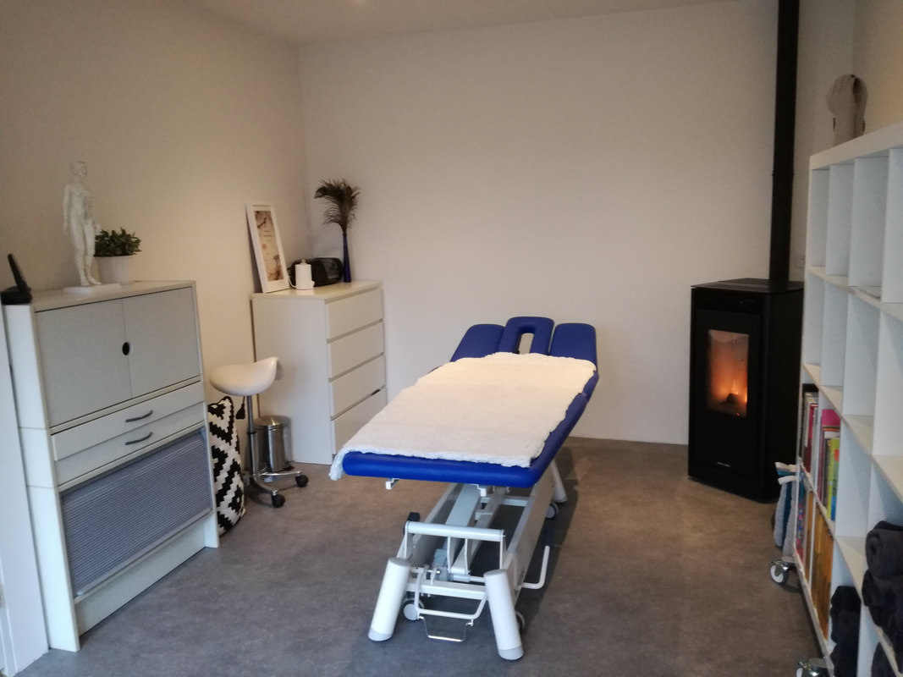
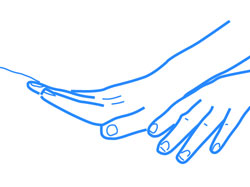
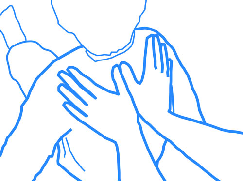

Laatste nieuws & aanbod
{%- for bericht in nieuws.berichten %}{% if loop.index <= 2 %} {% if bericht.badge %}{{ bericht.datum }}
{% endif %}{{ bericht.titel }}
{{ bericht.tekst }}
{%- endif %}{%- endfor %}Therapeutische praktijk · Boxtel
Shiatsu therapie · Japanse acupunctuur · klassieke massage · baby- & kindermassage cursussen. Een persoonlijke praktijk in Boxtel, vlakbij Oirschot — enkel op afspraak.

Welkom
"Pas in 2011 maakte ik van mijn passie mijn beroep — en sindsdien heb ik nooit opgehouden te leren."
Massagepraktijk Mirjam Maat is een persoonlijke praktijk aan huis in Boxtel. Geen spa, geen keten — maar een plek waar je heen gaat als je écht iets wilt laten behandelen of leren. Mirjam is shiatsu therapeut, Japans acupuncturist én cursusleider baby- en kindermassage. Ze werkt vanuit de Chinese geneeswijze: het lichaam als systeem, balans als doel.
Behandelingen & cursussen

Bij dieperliggende klachten als burn-out, slapeloosheid, hooikoorts of overgangsklachten — met nauwelijks voelbare Japanse naalden.
Meer over shiatsu therapie
Een Japanse drukpunt-massage die de energie laat stromen en zorgt voor balans. Heerlijk ontspannend en preventief.
Meer over shiatsu-massage
Voor algehele ontspanning, soepele spieren en betere doorbloeding. Ook als gerichte sportmassage.
Meer over klassieke massageEen gerichte massage van nek, schouders en hoofd die spanningshoofdpijn verlicht of zelfs wegneemt.
Meer over hoofdpijnmassage
Leer je baby op een liefdevolle manier masseren. Beter slapen, minder krampjes en kostbaar contact.
Meer over babymassage
Massage geeft kinderen rust, zelfvertrouwen en bewustzijn van hun eigen lichaam en grenzen.
Meer over kindermassageGoed om te weten
{{ bericht.datum }}
{% endif %}{{ bericht.tekst }}
{%- endif %}{%- endfor %}Bel of app voor een afspraak. Avonduren (ma/di/wo) zijn vaak een maand vooruit volgeboekt — plan dus tijdig.
{{ bedrijf.telefoon_weergave }}